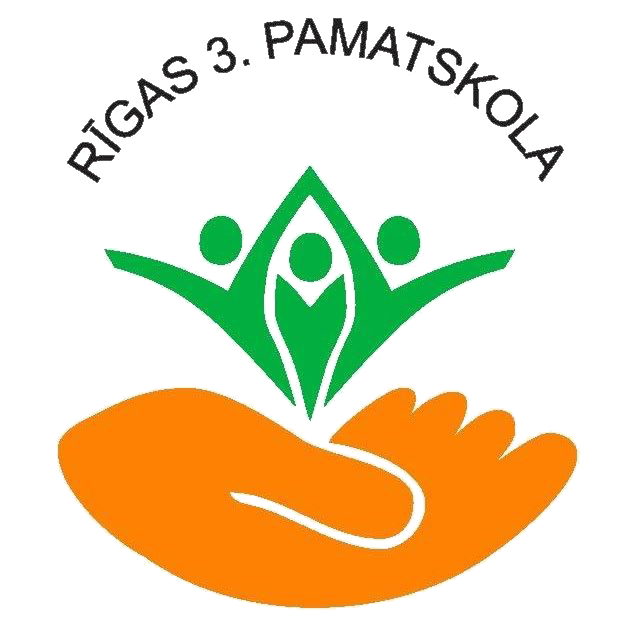

Mājas lapas vīzija ir mācību materiālu apkopošana vieglajā valodā.
Dzejoļi vieglajā valodā ir dažādu autoru adaptēti dzejoļi, ko iespējams praktiski izmatot pirmsskolas posma mācību saturā izglītojamiem ar GAT.
Cita valoda saturs tapa sadarbībā ar Rīgas 3. pamatskolas pirmsskolas izglītības skolotāju kolektīvu.
Jūsu ziedojumi palīdz mums.